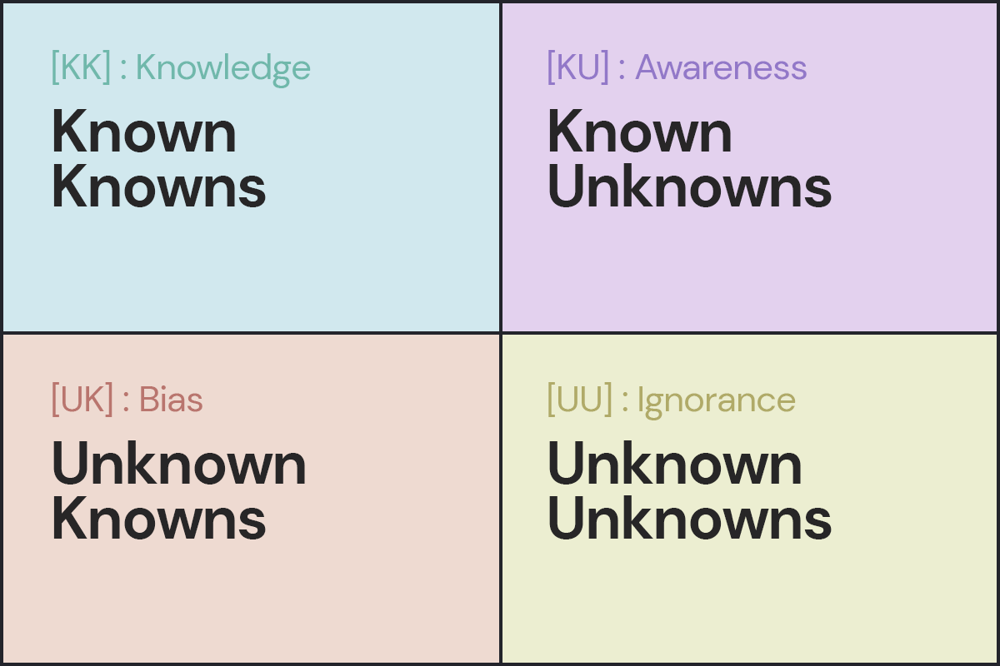
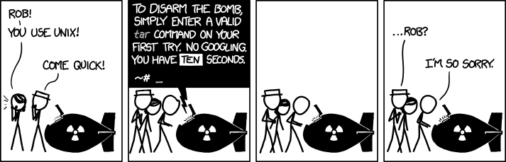
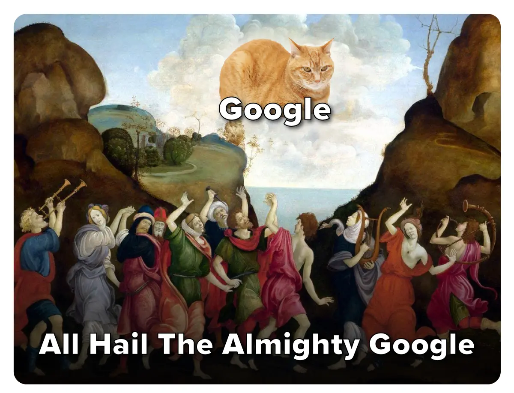

<div style="display: flex; justify-content: center; align-items: center; height: 700px;"> <div style="text-align: center; padding: 40px; background-color: white; border: 2px solid rgb(0, 63, 163); border-radius: 20px; box-shadow: 0 0 20px rgba(0,0,0,0.1);"> <h1 style="text-align: center; font-size: 48px; font-weight: bold; margin-bottom: 20px; color: #333;"> <ruby> Crash <rt style="color: #999;">崩溃</rt> </ruby> <ruby> Course <rt style="color: #999;">课程</rt> </ruby> <ruby> in <rt style="color: #999;">在</rt> </ruby> <ruby> Anything <rt style="color: #999;">任何事情</rt> </ruby> </h1> <p style="font-size: 24px; color: #666;">如何快速搞清楚</p> <p style="font-size: 16px; color: #999; margin-top: 20px;">Hengyu Ai | 2024-12-14</p> </div> </div> <!--s--> <div class="middle center"> <div style="width: 100%"> # Part.0 一点前菜 </div> </div> <!--v--> ## 标题是什么意思？你是怎么知道的？ 让我们找几名幸运听众 <div class="fragment"> - 认识这个单词 - 看过 [the crash course 系列](https://thecrashcourse.com/) - 看副标题猜测 - 用翻译软件 - 用搜索引擎 - 通过 "course", "in", "anything" 的意思猜测 - ... </div> <!--s--> <div class="middle center"> <div style="width: 100%"> # Part.1 思路 </div> </div> <!--v--> ## Rumsfeld Matrix <p></p> <!--v--> ## 知识储备 如果你已经对问题有充分的了解，你该怎么做？ <div class="fragment"> - 相信自己 - 不把时间浪费在细节上，边做边复习 - 在你之前解决问题时是否留下了记录？ </div> </br> <div class="fragment"> “经验” - 搜索社交软件的聊天记录 - 浏览器历史记录，搜索历史 - 留一份 troubleshooting 文档以备不时之需 - 搜索关键词：cheatsheet, quick reference, quick start </div> <!--v--> ## 知识储备 - 联想 如果你了解这个问题的背景中的某些部分，你可以联想到什么？ <div class="fragment"> - 先前见过的解决方案 - 你的理解中，解决方案的（可能的）组成部分 - 搜索其他有关解决方案的关键词 - 这个问题属于哪个大方向 $\to$ 哪里有更多的和这个方向高度相关的信息 - 如果你一时想不到正式的描述，可以让 AI 帮你想！ </div> </br> <div class="fragment"> - 层级很重要，片面的了解容易造成混淆，如：编辑器、编译器、解释器和你正在使用的 VS Code, Jupyter Notebook，这些概念是平级的还是存在包含关系？谁包含谁？ - [XY Problem](https://sketchplanations.com/the-xy-problem) - 同时 Top Down 和 Bottom Up，感觉偏离了问题就立刻停下，e.g. 学习数分/高数的时候搜到了维基百科上的定理证明，但是目前需要掌握那个定理的一个特殊情况 </div> <!--v--> ## 工具 <div style=" margin-top: 10px; margin-right: 10px;" markdown="1"> <img src="images/recent_searches_2x.png" width="43%" style="float: right;"> <br/> 这些搜索引擎可以解决大部分问题 - Google - Bing - CN Bing 国内版/百度（仅适合用于搜索中文社区内容） - DuckDuckGo </div> <!--v--> ## 图片搜索 有人发了一张图片，你找他一问，他说 “我也是转发的，找不到后续” 你：😄 `->` 😧 `->` 😡 - [Google Images](https://images.google.com/): 最通用 - [Yandex Images](https://yandex.com/images/): - [百度图片](https://image.baidu.com/) - 淘宝 App：拍照搜物品 **通用搜索流程**：在 Google Images/Yandex Images 里面搜索，在结果里面找到更清晰或更完整的图片，根据较完整的图片再次搜索 <!--v--> ## 专业性强/特定领域的搜索 可以先用通用的搜索引擎找到那个领域的网站，然后继续检索 - [Google Scholar](https://scholar.google.com/): 学术搜索引擎，搜索论文 - [Sourcegraph](https://sourcegraph.com/): 搜索网上的代码 - [Wolfram Alpha](https://www.wolframalpha.com/): 数学搜索引擎，对一些运算能给出逐步解题过程 - 对应领域的社区：如 [Stack Exchange](https://stackexchange.com/sites) 下就有各种主题的子社区 - 小红书、知乎也有用户分享的有用信息 - 学校提供的数据库，可以在图书馆网站找到数据库列表 <img src="images/stackexchange.png" width="45%" style="display: block; margin: 0 auto;"> <!--v--> ## 搜索概念/定义 - [Wikipedia](https://www.wikipedia.org/) - 不建议使用维基百科自带的搜索功能，直接在 Google 里面加上 Wikipedia 关键词搜索 - 有些词条没有中文/中文版质量差，推荐看英文页面 - [Merriam-Webster](https://www.merriam-webster.com/): 最权威的英语词典之一 - RTFM: *the friendly manual*，有时候直接看官方文档是最好的选择 </br> <p></p> <div style="text-align: center;"> 有些时候还是坚持 TL; DR 原则更好 </div> <!--v--> ## 搜索引擎的高级功能 以 Google 为例，其他搜索引擎使用方式类似 - 强制包含关键词：半角双引号 - 强制排除关键词：减号 - 模糊匹配：星号 如 “Python * tutorial” 可能匹配到 “Python beginner tutorial”，“Python Datascience tutorial” - 限制搜索网站：site: 如 “site:stackoverflow.com Python” - 限制搜索文件类型：filetype: 如 “filetype:pdf Python” <!--v--> ## 其他 - 对于时效性极强，还没有大范围出现的内容，在社交媒体搜索效果更好 - 电子书：学校购买授权的数据苦，zlibrary，libgen - 网站挂了，可以用 whois 查询域名的历史解析记录，可以在 [Wayback Machine](https://archive.org/web/) 上找到历史快照 - [Internet Archive](https://archive.org/): 互联网档案馆，有很多资源 - 使用浏览器脚本，如去除广告，沉浸式翻译 <!--v--> ## 人类智慧 > The end justifies the means. - Niccolò Machiavelli - 应试手段，e.g. 假设题目不包含无效信息，因此着重思考没有用到的的部分 - 搜索往年题目 - 当前问题和其他部分信息在逻辑上必定有联系 - 猜测答案，搜索答案的关键词 <!--s--> <div class="middle center"> <div style="width: 100%"> # Part.2 过程 </div> </div> <!--v--> ## 你最开始的搜索导向对吗？ - 明确你的问题到底是什么！[提问的智慧 中文版](https://github.com/ryanhanwu/How-To-Ask-Questions-The-Smart-Way/blob/main/README-zh_CN.md) - 你可能过分的细化/泛化了你的问题 - 对于一个网站，可以去掉其子域名，比如对于 manga.bilibili.com 可以搜索 bilibili.com，看看你想搜的在不在那里 - 对于转载，追溯到原创作者处，他可能有更多关于此内容的文章 - 对于某一作者，搜索他在不同网站的账号 <p></p> <!--v--> ## 关键词 - 一大段描述文字的搜索结果通常不尽人意的 - 搜索引擎不是有分词功能吗？ - 长句子分词后也有很多杂音 - 清除冗余 - “我该怎么用工具 x 做出 y?” `->` “x y” - 用空格来分隔关键词，视情况选择具体的还是更抽象的关键词 - 通过搜索结果来调整关键词 - 搜索结果里面可能不包含一部分关键词 `->` 尝试去掉这些关键词 - 搜索结果给你新的启发 `->` 尝试加入这些关键词 - 根据结果不断迭代 - 内容太老旧 `->` 限制搜索时间/加年份关键词/加软件版本号 - 名字一样，但是不是你要搜的领域的东西 `->` 加上领域关键词 - ... <!--v--> ## 广告！广告！ - 广告通常在搜索结果的最上面（令人发指） - 仔细观察，有的广告会标注“广告”标签 - 有些东西并没有“官网”，请在搜索之前确认（比如说 C/C++ 并没有官方网站，只有非官方的 cppreference，而且这个网站和配置 C/C++ 环境没有关系） - 广告网页的域名显然不对 - `.org`, `.edu`, `.gov` 通常是官方网站 - 外国软件突然出现了 `.cn` 域名 - 广告域名和你要找的内容看起来完全无关 - 广告商是中国某不知名公司 - 味道很冲的关键词罗列：一键下载安装,无捆绑软件,安全无毒,绿色免费版 - 类似某某软件园这种的盗版下载站里面可能有资源，但是小心下载到 p2p 下载器 - 不要因为懒得分辨广告而直接点击，这很可能让你打开广告，你的目的是**解决问题！** - 你可以选择使用广告拦截插件 <!--v--> ## 广告！广告！ <img src="images/baidu_ads.png" width="75%" style="display: block; margin: 0 auto;"> <!--v--> ## 排除低质量内容 - CSDN：内容质量参差不齐 - 看起来就像是要卖你东西/卖课的网站 - “经验分享”，点进去有百度网盘链接，里面是大量初级资料，看不完并且未经筛选 - 百度百科的部分低质量页面：一看发现最后更新时间是二十年前 - 营销号：广泛存在于微信公众号、百度百家号等平台 - 机翻搬运：比如说腾讯云搬运的 stackoverflow 帖子，看到机翻一定要找原帖 <!--v--> ## 太长了，我不看（TL; DR） - 可能关键词藏在页面某处，善用 `Ctrl + F` 网页内搜索 - 对于英语内容，可能没法像中文一样一眼扫出关键词，可以用对话大模型总结 - 搜到的东西太“正式”了，比如 C++ 标准，可以去看看别人的博客 - 内容里面有很多专业术语/看不懂的缩写 - 搜出来结果，让你读一部大部头的书（很可能那个人自己都没读完） </br> - 该跳过就跳过，把时间花在更有价值的地方 - 你可以问生成式大模型，先打下基础再回看 <!--s--> <div class="middle center"> <div style="width: 100%"> # Part.3 回看 </div> </div> <!--v--> ## 假如你要做一个 Crash Course 课件 **明确目标**：做课件 $\to$ 课件内容 & 课件表示形式 <div class="fragment"> - 课件内容：自己想 - 课件表示形式：PPT, Markdown, Word, PDF, HTML, ... </div> </br> <div class="fragment"> - 我也想加一个 known-unknown 四宫格 - 开始搜索吧！ </div> </br> <div class="fragment"> - 课件使用的模板是什么，我也想做一个有翻页动画，能放在网页上的课件 - 我想用上科大的课件模板 - 我想用 SI100B Python Project 介绍的课件模板 - 该搜索什么关键词？ </div> <!--v--> ## 假如你要学习 Python OOP <div class="fragment"> - 选项 1：老老实实搜索“什么是面向对象编程”、“面向对象编程教程” - 缺点：出现很多暂时不用深入了解的概念，如“数据封装、继承和多态”，搜索到的可能和 Python 无关，搜索到低质量、低信息密度的内容（如 b 站上的一堆收藏特别多但是内容质量很差的视频） </div> <div class="fragment"> 反思：你真的需要知道“面向对象编程”这个概念是什么吗？你完全可以后面再了解这个概念，现在你只需要知道怎么用 Python. 那么你需要用什么？思考你见到的 Python 代码中有哪些特点？ </div> <div class="fragment"> - 选项 2：搜索“Python class tutorial”、“Python class example” </div> </br> <div class="fragment"> 现在你对如何写一段能跑的代码有了一定的了解，如果还有更多不熟悉的内容： - 例：方法中的 `self` 是什么？ 搜索："Python self" - 例：为什么有的类定义里面，名称后面跟着括号？ 无法直接搜索，可以写一个例子问 AI </div> <!--v--> ## 假如你想做一个下图中的东西 第一个问题，这是什么？（你该如何描述这个东西） <div class="fragment"> 附加问题，如果你没有这张图，手边也没有实物，你会怎么做？ </div>